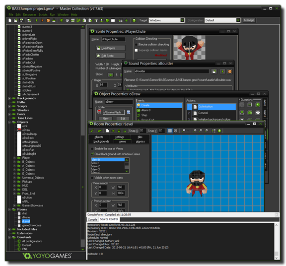

我们都知道电脑游戏非常有意思。 但是很多人没有意识到自己来设计游戏给别人玩更能享受到乐趣！以往，制作电脑游戏往往并不那么容易。你平常购买的那些商业游戏通常是10至50人用了两到三年的时间开发的结果，其预算动辄数百万美元。所有这些人都是专业人士：他们是程序员，美术设计师，音响技师等。
随着Game Maker: Studio的到来，这一切都改变了。 用GameMaker: Studio你可以在不需要学习编程知识的情况下创造游戏原型、或者快速方便地制作游戏。（译者：还是学习一些编程思想会更利于开发）
GameMaker：Studio提供了直观，易于使用的“拖拽”界面，让您可以快速地制作自己的游戏。您可以导入和或者创建图像和声音，并在物体中使用。如果你想快速上手，GameMaker：Studio中还提供了一些教程和演示，你可以打开看看，或者直接使用它们。这里应该指出的是，GameMaker：Studio的重点是2D游戏。很多大作通过巧妙使用2D精灵技术，使他们的3D效果也很明显（伪3D）。这并不是说GMS不能做3D游戏。事实上，GMS也是可以制作真3D游戏的！ 
如上所述，你需要为物体指定图像（精灵）和其他属性、并添加行为，这些都很容易通过“拖拽”来完成，然后将它们放在房间内，再添加背景等，使游戏达到你所需要的效果和感觉！在GMS中，游戏都是在“房间”里面运行的，你也可以把房间理解成不同的“关卡”。一旦你掌握了“拖拽”界面及其工作方式，然后你可以开始学习到简单易学的编程语言GML，它可以让你更好地控制GameMaker:Studio的各个方面。
本帮助文件将告诉你，你需要知道的GameMaker：Studio最重要的事情：如何用它制作自己的游戏。请认识到，即使像GMS这样的软件，设计制作电脑游戏并不是完全不费力 - 所以在GMS中并没有“一键做DNF”按钮！要知道，游戏的很多方面，都同样重要：玩法，图形，声音，用户交互等......但，一切的最重要的方面，就是耐心。虽然GameMaker：Studio是一个强大的工具，但它并不能“一键”帮你解决所有问题，因此，从简单的例子做起，你会发现，不仅创造游戏非常有趣，而且学习使用GameMaker：Studio来也是很有成就感的！
欲了解更多信息，示例，教程，想法和论坛链接、学习网站链接，请移步
http://www.yoyogames.com/
你很快你就会成为GameMaker高手。尽情体验！
by 鸵翼天
| Converted from CHM to HTML with chm2web Pro 2.85 (unicode) |